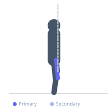
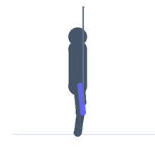

Exercise guide / Terminal Knee Extension
Terminal Knee Extension
Terminal knee extension (TKE) is a rehabilitation exercise that strengthens the quadriceps specifically in the final degrees of knee extension (from about 30 degrees to full extension). Using a resistance band anchored behind the knee, the exercise targets the VMO (vastus medialis oblique) and the final-range quad strength that is critical for knee stability. It is a standard exercise in ACL rehabilitation, patellar tendinopathy management, and post-surgical knee recovery.
Primary muscles
rectus femoris
vastus medialis
Secondary muscles
vastus lateralis
Stabilizers
gluteus medius
Equipment
Resistance Band (Loop / Mini Band)


Starting position
- Anchor the resistance band loop at knee height behind you. Loop the band around the back of one knee. Stand facing away from the anchor with the band behind the working knee.
Setup
- Anchor the band at a rack or door frame at approximately knee height. The band pulls the knee into slight flexion.
Steps
- Step 1: Face away from the band anchor, loop the band behind the working knee.
- Step 2: Stand on the working leg with a slight knee bend (10–30 degrees). The band will pull the knee into further flexion.
- Step 3: Straighten the knee fully against the band's resistance, contracting the quadriceps hard at full extension.
- Step 4: Hold the fully extended position for 1–2 seconds.
- Step 5: Slowly allow the band to flex the knee back to the starting position with control.
Coaching cues
- Squeeze the quad hard at full lockout
- Straighten the knee without snapping it back
- Feel the inside of your thigh (VMO) fire at full extension
Breathing
- Exhale as the knee extends. Inhale as it returns.
Range of motion
- From 30 degrees of flexion to full extension. Focus on the terminal range — the last 15–20 degrees.
Tempo
- 2-second extension, 2-second hold, 2-second return. 15–20 reps × 2–3 sets.
Common mistakes
- Hyperextending the knee forcefully — extend to neutral, not beyond
- Using momentum rather than a controlled quad contraction
- Letting the hip drop on the non-working side
Safety
- Safe for most post-surgical knee populations when cleared by a clinician
- Avoid hyperextension if the patient has posterior capsule or PCL involvement
Training
- strength: 15–20 reps
- strength: 2–3 sets
- Rest: {'strength': 60}